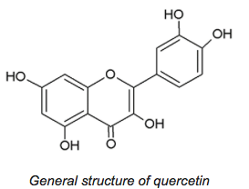
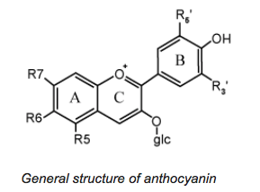

CONCLUSION AND DISCUSSION
Both anthocyanin and quercetin show significant photoprotective capabilities and antioxidant activity. Both quercetin and anthocyanin resulted in higher survival of E. coli exposed to UV radiation. As such, this proves our hypothesis correct. In conclusion, both anthocyanin and quercetin have great photoprotective capabilities and potential to address the issue of hair photoprotection, which is often neglected but is in fact, an important aspect of research. Furthermore, quercetin and anthocyanin are natural substances that can be extracted easily from natural sources, for example, quercetin can be extracted from Allium cepa L. (Patil et al., 1995), and anthocyanin can be extracted from Garcinia mangostana (Chaovanalikit et al., 2012). As such, these flavonoids can be easily obtained and used in hair photoprotection methods. Quercetin and anthocyanin extracted from these natural sources can be incorporated into products with substantivity to hair, for example, gels and sprays, which can be applied to human hair to protect hair structure from harmful UV radiation in sunlight.
From the results of UVB-absorbances and SPF values of anthocyanin and quercetin, both flavonoids had high SPF values and exhibited significant photoprotective capabilities, although quercetin had a significantly higher SPF value and thus had greater photoprotective capabilities than anthocyanin. One possible photoprotective mechanism is direct UV absorption. Quercetin may have a greater UV-absorbing capacity than anthocyanin and the UV energy absorbed by quercetin may be dissipated as heat or light (Falkovskaia, Sengupta and Kasha, 1998) or through decomposition of quercetin (Fahlman and Krol, 2009). The major photoproducts from either UVA or UVB radiation are 2,4,6-trihydroxybenzaldehyde, 2-(3’,4’-dihydroxybenzoyloxy)-4,6-dihydroxybenzoic acid and 3,4-dihydroxyphenyl-ethanol (Zvezdanović, Stanojević, Marković and Cvetković, 2012).
The anthocyanin used in this study was a Chinese bilberry extract containing only 25% anthocyanin and this might have accounted for the lower SPF value of anthocyanin.
Similarly, from the results of the DPPH assay, although both flavonoids exhibited significant antioxidant activity, quercetin had a much higher radical scavenging activity than anthocyanin, and thus exhibited greater antioxidant activity. Both quercetin and anthocyanin are flavonoids with many phenolic hydroxy groups and as such, they can donate hydrogen atoms to free radicals, acting as radical chain terminators (Dall’Acqua, Miolo, Innocenti and Caffieri, 2012).
Due to the presence of a carbonyl group on the 4th carbon of the C-ring of quercetin, and the presence of a large number of hydroxyl groups, 5 of them namely on the 3, 5, 7, 3’, 4’ carbons, which can donate electrons to free radicals, neutralising them. This accounts for the high antioxidant activity of quercetin.
The anthocyanin used in this study was a Chinese bilberry extract containing only 25% anthocyanin and this might have accounted for the lower radical scavenging activity calculated. Furthermore, quercetin belongs to a specific group of flavonoids, namely flavonols, whereas anthocyanins are a group of flavonoids themselves. Different forms of anthocyanins e.g. cyanidin, peonidin, may contain varying numbers of hydroxyl groups, which contribute to the antioxidant activity of a molecule. For example, peonidin has only 4 hydroxyl groups whereas cyanidin has 5 hydroxyl groups. As such, the extract used may have contained anthocyanins with fewer hydroxyl groups, causing the calculated radical scavenging activity to be lower.
 The results of the SPF test and the DPPH assay correspond with that of the colony count test, as it can be observed that both anthocyanin and quercetin were able to increase the survival of E. coli exposed to UV radiation. The bactericidal effect of UV radiation on E. coli was clearly observed when no or few colonies were observed in set-ups containing E. coli without any protection by anthocyanin or quercetin when exposed to UV irradiation. However, no comparison between the photoprotective capabilities of anthocyanin and quercetin could be made in the colony count test as colony count tests for anthocyanin and quercetin were conducted separately from each other.
The use of E. coli as a model organism served to demonstrate the photoprotective effect of anthocyanin and quercetin against UV radiation, given that earlier experiments had shown that both flavonoids exhibited great photoprotective capability and antioxidant activity. This segment of the study was possible due to the bactericidal effect of UV radiation on E. coli. When DNA is exposed to UV radiation at 254 nm, the most frequent DNA damage results at dimers of two adjacent pyrimidine bases, T-T, C-T, C-C (Lin and Wang, 2001). Kodoth and Jones (2015) investigated the effects of UV radiation of wavelength 254 nm on the E. coli K-12 strain, similarly using the colony count test, and the fewer CFUs on the irradiated plates indicated UV suppression of E. coli development and reproduction. As such, a modification of the experiment was used to demonstrate the photoprotective effect of anthocyanin and quercetin against UV radiation.
DMSO is a solvent that can mix with water and oil, giving it the ability to penetrate the skin. DMSO is a carrier that rapidly introduces substances into the body. DMSO has been widely used for many years in sports medicine (Wiles, Williams & Ahmad, 2011) and the prospect of application of a solution of a substance in DMSO is thus a possibility. Quercetin and anthocyanin can be incorporated into products with substantivity to hair, such as gels and sprays, thus allowing for the photoprotection of hair against UV radiation.